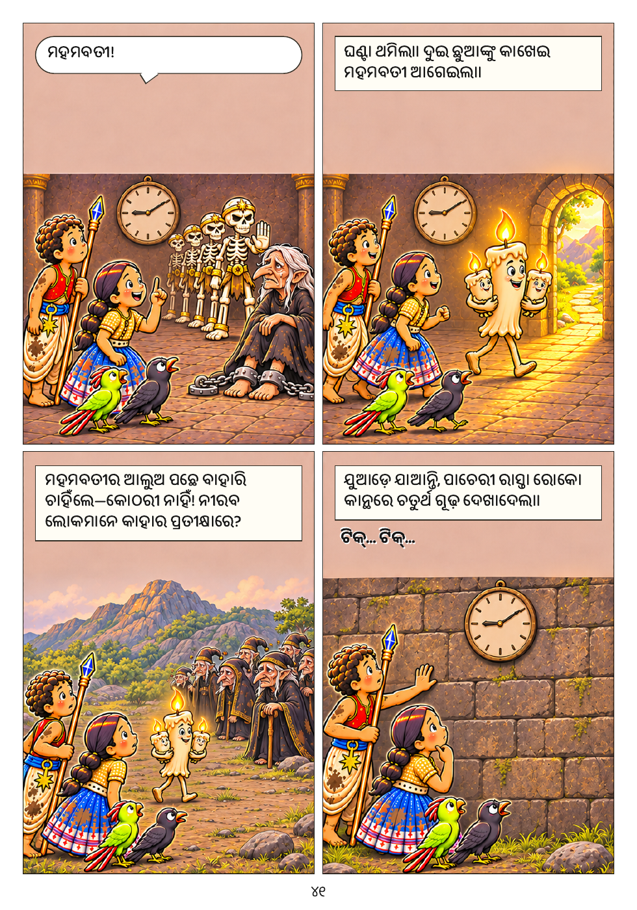

କାହାଣୀ · ୪୧
ବଡ଼ କରି ଦେଖନ୍ତୁ ↗ 
କାହାଣୀ · ୪୧ଏହି ପୃଷ୍ଠାର ଲେଖା ପଢ଼ନ୍ତୁ
ମହମବତୀ!
ଘଣ୍ଟା ଥମିଲା। ଦୁଇ ଛୁଆଙ୍କୁ କାଖେଇ ମହମବତୀ ଆଗେଇଲା।
ମହମବତୀର ଆଲୁଅ ପଛେ ବାହାରି ଚାହିଁଲେ—କୋଠରୀ ନାହିଁ! ନୀରବ ଲୋକମାନେ କାହାର ପ୍ରତୀକ୍ଷାରେ?
ଯୁଆଡ଼େ ଯାଆନ୍ତି, ପାଚେରୀ ରାସ୍ତା ରୋକେ। କାନ୍ଥରେ ଚତୁର୍ଥ ଗୂଢ଼ ଦେଖାଦେଲା।
ଟିକ୍… ଟିକ୍…
ସବୁ ପୃଷ୍ଠା